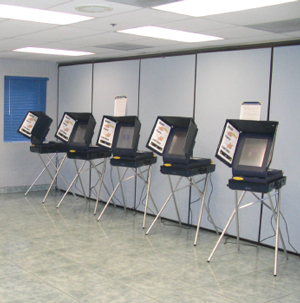

Kiraly: Not A Typical Candidate
Ask Republican candidate Virginia Chang Kiraly about her race against Democrat Ira Ruskin, and she’ll tell you it’s going to be tough. This election season as she fights to represent Silicon Valley in Sacramento, she challenges not only a powerful incumbency, but also stereotypes about what makes a successful candidate.
East Bay Could Be California’s Closest Congressional Battleground
I flew into California on Saturday, September 16 to get ready to move in to Stanford. My family and I decided to spend the day in San Francisco. Ever the political junkie, as we drove into the city, the radio caught my attention as I heard my first California political advertisement. Promising large tax hikes and government ineffectiveness, the ad attempted to make it clear that Jerry McNerney, the Democratic candidate in California’s 11th congressional district, was too big of a risk for its residents to take.
Endorsements: State Cabinet
Following ups and downs in approval over the past three years, incumbent Gov. Arnold Schwarzenegger (R) is seeking a full term as governor. His priorities for his next term include addressing the state’s continual budget shortfall as well as reforming the prison system and legislative redistricting. During his first two years, Governor Schwarzenegger has presided over a growing economy with half a million new jobs while cutting taxes. His opponent is state Treasurer Phil Angelides (D).
Important Controller Race Looms
In the face of looming gubernatorial and congressional elections, small posts such as California State Controller can easily get swept under the rug. This forgotten election, however, can have a bigger impact on your life that it may seem. First of all, what is a state controller? Though not an actual implementer of taxes, the controller has a vote on over 40 boards with tremendous sway on California tax policy, is overseer of cash-flow, and, quite literally, “controls” the state’s money supply.
Letters to the Editor
I support the distribution of all student publications, including the Stanford Review, which provides a valuable outlet for the conservative voice on campus. However, I believe that an interpretation of Stanford’s non-distribution policy as a surreptitious means of excluding certain student perspectives, including the conservative voice, risks discrediting the Review’s reputation.
Asian Inclinations for the American Election
As a student, my father once had to write an examination essay on the question: “Should the world be allowed to elect America’s leaders?” The exam’s point was that the world has a stake in the outcome of America’s democratic process because of the United States’ global pre-eminence.
Propositon 87: An Artificial Burden
With environmentally friendly fuels the new cause célèbre, environmentalists seek to capitalize by passing a new tax on oil producers through Proposition 87. Proposition 87 is a bill that would tax oil production in California at a sum of $4 billion over ten years. The tax revenue will go to research for alternative energy, education, and training. The tax would levy a 1.5-6% charge on oil producers, depending on the price per barrel. Revenue from the bill is estimated $225 to $485 per year.
’94 Déjà Vu?
“The Democrats’ nightmare goes something like this: the party that broke a dozen years of frustration by winning the White House in 1992 awakens Nov. 9 to find itself transformed overnight into the minority part in Congress.” This was an opening line in Congressional Quarterly Weekly, October 22, 1994, on the eve of the Republican congressional sweep in the midterm elections. Now the tables seem to have turned, with Republicans looking vulnerable in midterm congressional races across the country. In light of polling data that suggests Democrats have a chance to retake the House and possibly the Senate, major news organizations and professional pundits are looking to answer the question: will 2006 be like 1994?
Proposition 85: A Libertarian Perspective
California Proposition 85 aims to legislate increased communication between minors seeking an abortion and their parents. While at first glance such a policy may appear to be in the best interests of all parties involved, the functional effects require a closer examination. Abortion is a hotly contested issue that continues to divide our nation, through expensive political campaigns and fierce advocacy battles coming from both sides. Proposition 85 would bring that battle to the home.
|
A Note to the Reader
In just a few days, America will go through what is liable to become its most momentous midterm election since the Republican revolution of 1994. In the balance hang the control of Congress, the directions of the 2008 Presidential campaign, and the future of politics in California. In competitive districts across the country, in Washington, and wherever two or more are gathered in the name of punditry, tensions run high.
Endorsements: National and Local Positions
According to a Field Poll in October, incumbent Senator Dianne Feinstein (D) maintains a comfortable lead of 57% to 29% percent against Republican challenger Richard Mountjoy. The race has been uneventful, with both candidates easily winning their party’s respective primaries. Mountjoy, a former State Senator and current Immigration Control Consultant, is less-known than Feinstein, whose popularity will likely win her an easy re-election.
Endorsements: Propositions
Prop 1A limits the state’s ability to spend gas tax money on projects besides infrastructure. It mandates that money collected by California’s gas tax only fund transportation, infrastructure and road-related projects. We consider this a sensible measure that keeps the state from raiding transportation money to satisfy special interests and cover up for frivolous spending. The measure is supported by both Democrats and Republicans.

A Proposition: End Propositions
167 pages. 167 full-on 8-by-11 pages of the 192-page California voter information guide are dedicated to propositions: arguments, counterarguments, sponsors, detractors, summaries, and the actual texts of the propositions. In fact, 92 pages worth of information about this election’s propositions appear before information about actual candidates. And, this is merely the English version.
Horizontal Promotions Shape Races
In each midterm election, Californians find a slew of races to fill seats in their state executive branch. Unlike some states that only directly elect the governor, secretary of state, and attorney general, California votes on those positions, as well as the lieutenant governor, controller, treasurer, and insurance commissioner. Adding to the interest this year is the large number of vacancies: due to term limits, only two of the seven races feature incumbents seeking re-election, and even these incumbents have not served a full term.
Why You Need to Vote Yes on Proposition 83
For those of you voting in California, one of the propositions on the ballot this year is Proposition 83, Jessica’s Law, which is supported by both the Democratic and Republican Parties. To refresh your memory, Jessica’s Law is the one that strengthens punishments for sexual predators. Among the improvements are new laws requiring GPS devices, altering parole and sentencing rules, and dictating minimum distances sex offenders must live away from schools or parks.
85 Ensures Consistency in the Law
When I turned eighteen a few months ago, a friend posed to me an interesting question: “Do you feel like an adult?” After briefly pausing, I had to answer no. After all, why should turning eighteen make me feel like an adult when for the last five years I have been sexually mature and capable of exercising my “most sacred” right as a woman without my parent’s knowledge or consent: my right to an abortion.
The Democrats in Power?
As a moderate, Democratic Leadership Council (DLC) type liberal, I am very pleased with the projections for this November’s Congressional elections. MajorityWatch, which performs running averages of polls in each House district, has 222 House Democrats leading outside of the margin of error with only 218 needed to take a majority. There’s a chance, albeit small, that the Democrats could take as many as 227 or 228 seats. In the Senate, the Democrats are assured of victory in Pennsylvania and Ohio, and will probably win in Montana and Rhode Island. Virginia, Tennessee and Missouri are up for grabs, and the Democrats will have to win two of three to take the Senate. Nevertheless, the Democrats will pick up several seats and make it harder to pass legislation at a bare minimum.
|